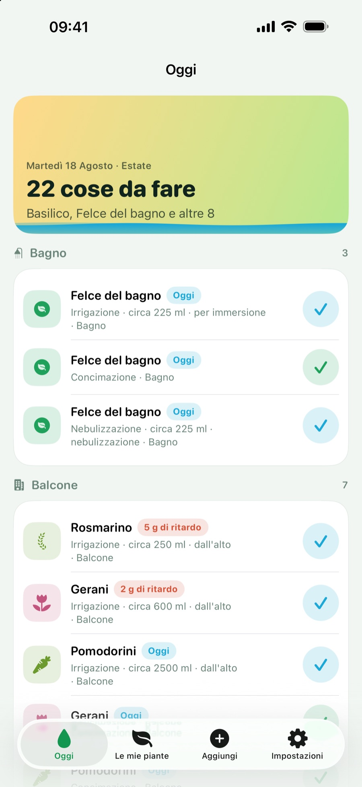
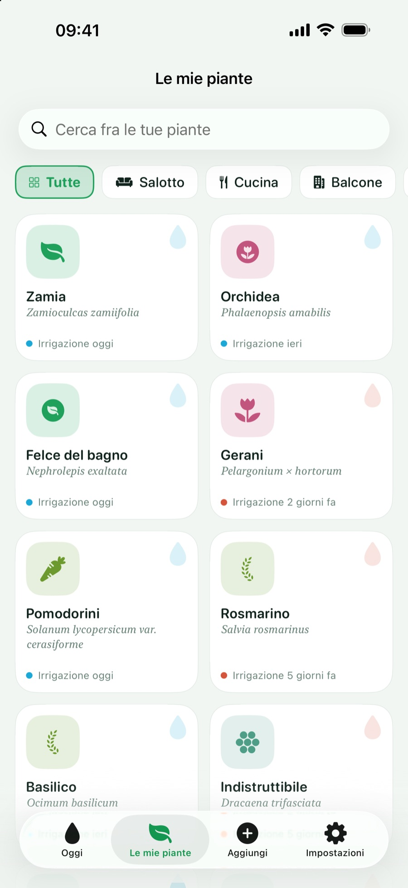
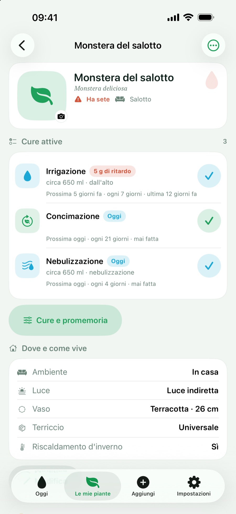
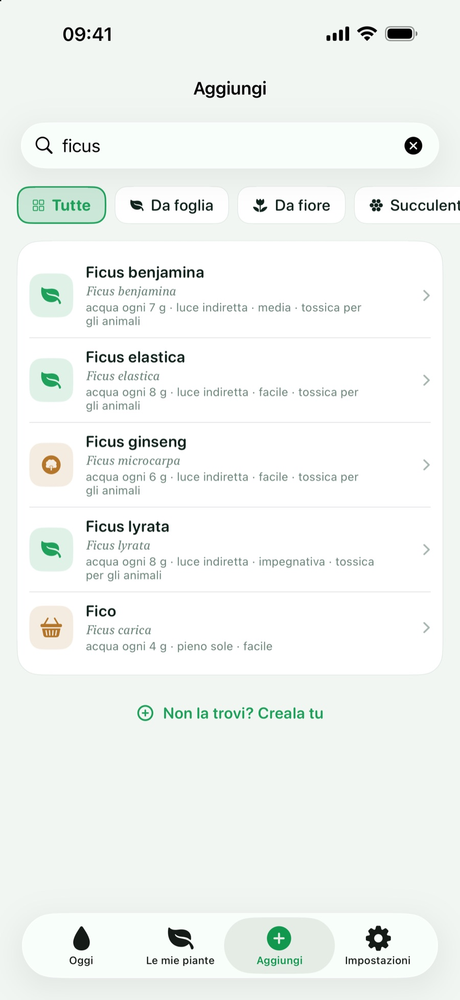
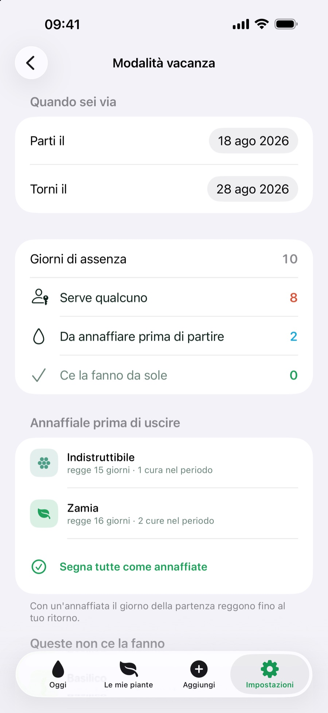
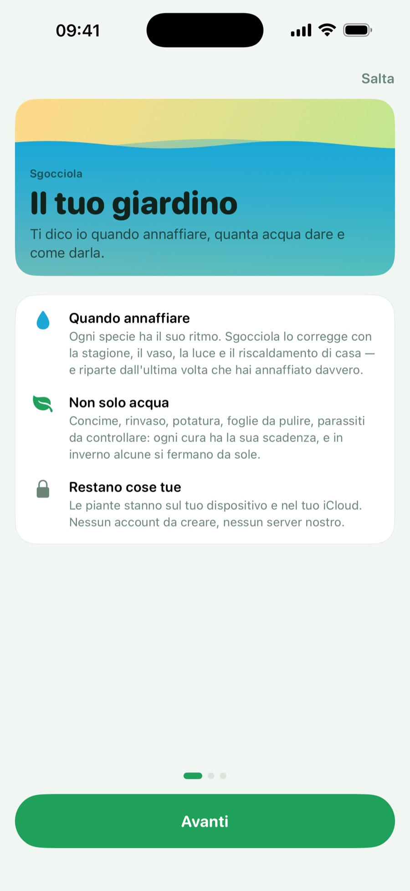
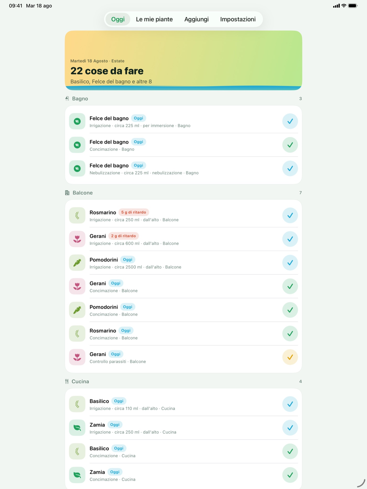
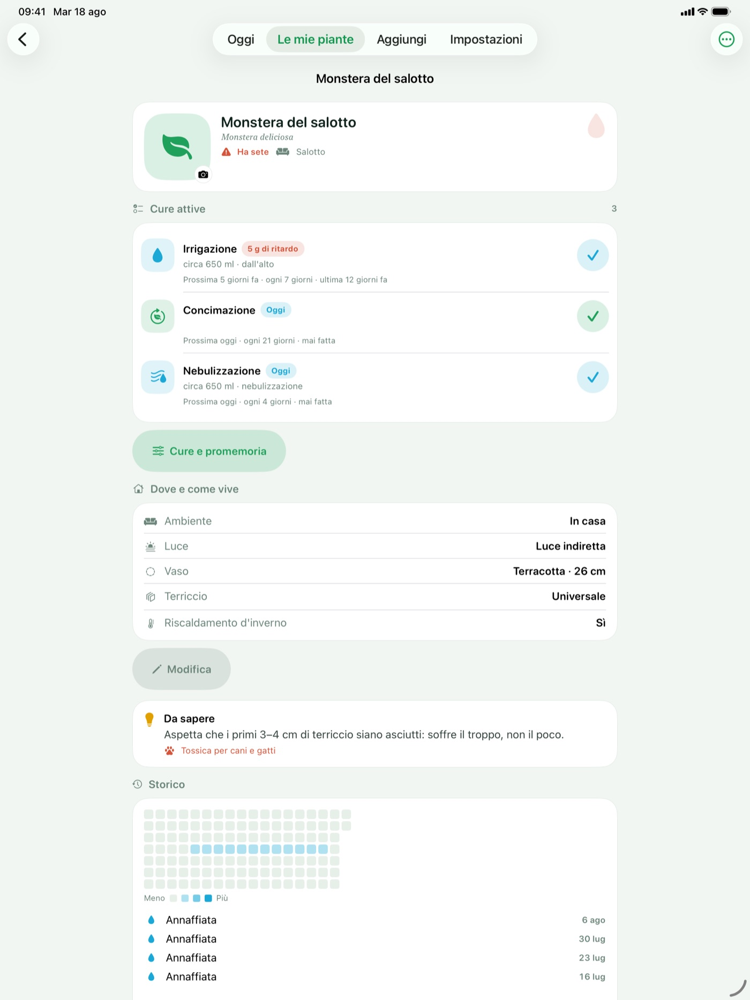

Materiali per la redazione. Ultimo aggiornamento: settembre 2026 (versione 1.2).
Sgocciola ricorda quando annaffiare le piante, quanta acqua dare e come darla — e con l'acqua tutto il resto che una pianta chiede e nessuno si ricorda: concime, rinvaso, potatura, rotazione del vaso, pulizia delle foglie, controllo dei parassiti, nebulizzazione, spostamento stagionale, drenaggio.
Non è un promemoria che si ripete ogni sette giorni. L'intervallo parte dalla specie e poi si corregge con quello che cambia davvero: la stagione, il riposo vegetativo invernale, il materiale e il diametro del vaso, l'esposizione alla luce, il terriccio, il riscaldamento acceso in casa. Una monstera in un vaso di terracotta accanto alla finestra a febbraio non ha la stessa sete della stessa pianta a luglio, e l'app lo sa.
Su iPhone e iPad con iOS 27 e Apple Intelligence, dalla scheda Aggiungi si può fotografare una pianta di cui non si conosce il nome. Il riconoscimento usa il modello di Apple sul dispositivo: la foto non esce mai dall'iPhone. L'app propone e non decide — mostra le specie candidate e invita a controllare; se della proposta il catalogo conosce solo il genere, apre la ricerca su quel genere invece di scegliere una specie al posto dell'utente.
Niente account, niente server dello sviluppatore, niente pubblicità, niente tracciamento, nessuna libreria di terze parti. Le piante stanno sul dispositivo e, se si vuole, si sincronizzano fra i propri dispositivi attraverso il proprio iCloud privato. La scheda App Store dichiara «Dati non raccolti».
Dynamic Type in tutte le dimensioni, VoiceOver e «Riduci movimento» supportati ovunque: dove c'è uno swipe c'è sempre anche un bottone visibile.
Interfaccia interamente in SwiftUI, dati in SwiftData con sincronizzazione sul database privato di CloudKit, WidgetKit, App Intents per Siri e Comandi Rapidi, notifiche locali con azioni, Foundation Models per il riconoscimento da foto su iOS 27. Nessuna dipendenza di terze parti.








Servono le immagini a piena risoluzione o altro materiale? Basta scrivere a donbreda4@gmail.com.
© 2026 Giulia Giancaterino